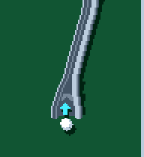
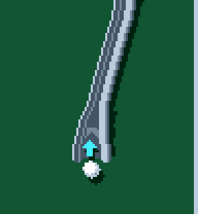
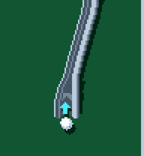
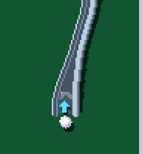
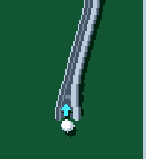

00 Previous wide
17 px deck

Actual C++ rendering and ball capture. Same approach, physics, speed and entrance sprite. Camera fixed for comparison. Width labels describe the deck, excluding the rails. The selected profile is marked with a star. Compare arrow treatments.
17 px deck

15 px deck

13 px deck

15 px deck

13 px deck

15 px deck